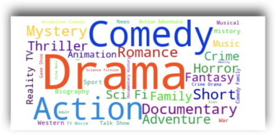
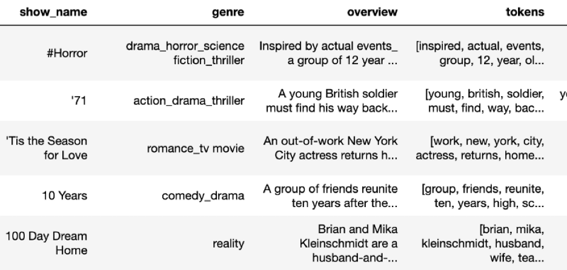
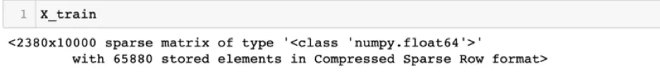
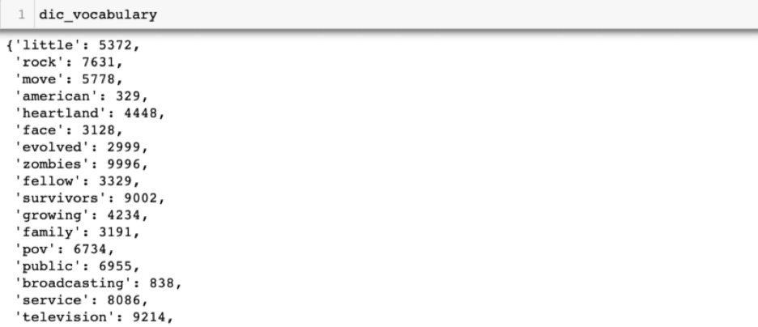
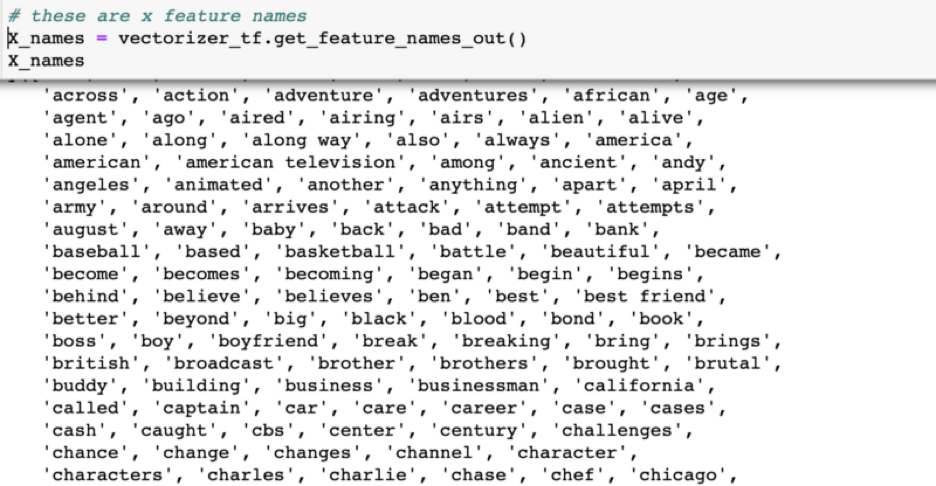
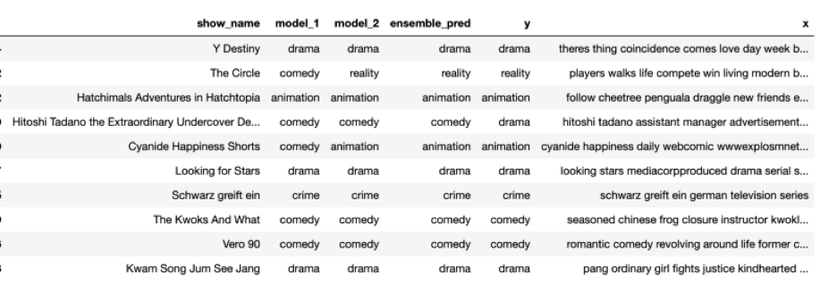
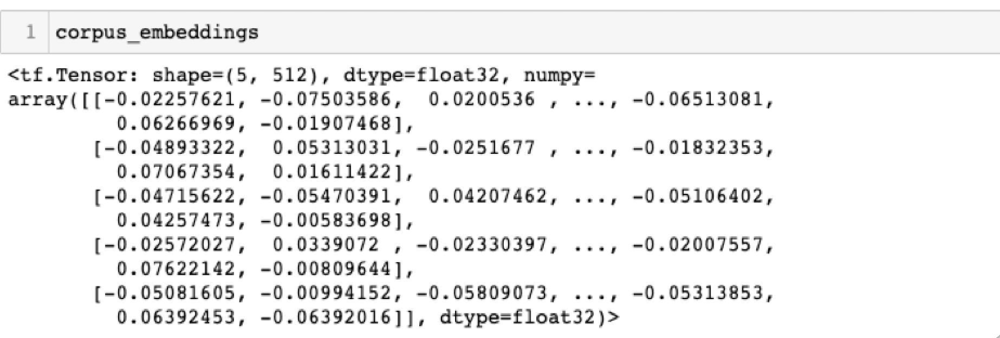
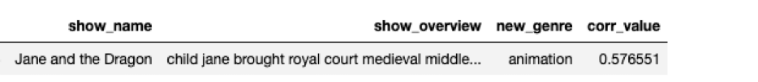

Predicting Movie Genres using Machine Learning Models and Semantic Textual Similarity

Project Overview
Some people love horror, others prefer drama, and some can’t get enough of sports. But how do we know which genres are most popular at any given time? Do people really start watching Christmas movies in October? While streaming platforms like Netflix and Hulu categorize content, how do they do it?
This project explores movie genre trends and uses machine learning to predict genres based on a movie’s synopsis or description. By analyzing patterns, we aim to understand which genres dominate at different times of the year.
✽ The complete blog can be found on my medium.com page.
✽ The corresponding code can be found in github.
Table of Contents
Data Collection - Finding Show Descriptions and Genres
The first task in predicting genres is finding show descriptions and their genres. The TMDB API is a free API built by the community and can be used to pull genre and overview information. It includes many other fields such as release date, keywords and language. While the data is not perfect data, it is still a good source of information.
Data Preprocessing and Cleaning - A Crucial Step
One very important preprocessing step before building any machine learning models or performing any analysis is data cleaning. The overview field describes what a show is about and can be input by anyone, so I had a lot of data cleaning to do, as would be expected with most NLP tasks.
Data preprocessing involved the following steps (and more):
The reason for this is that we don't want our model to use words or numbers that are not important in predicting a show's genre. For example, we remove words such as "a", "the", "it" which are known as stop words because they will not provide any important information in our predicting task.
In the below example, I used the NLTK library to perform some of the preprocessing steps mentioned above. The NLTK library is very useful when you are working with natural language; it contains many algorithms which streamline text preprocessing.
Function to clean show overview
Source code in functions.py
A quick look at the data shows that each row in the tokens column contains a list of words:

TFIDF Vectorization (Term Frequency-Inverse Document Frequency)
In general, machine learning models don't understand words as features, so we need to do something to convert words to features (a numeric representation). In order to use Naive Bayes or SVM classification models, each row with a synopsis needs to be converted to numeric representation - this is referred to as vectorization.
The scikit-learn python machine learning library provides methods to convert words to numbers: we can use CountVectorizer to count the number of times a word appears or we can use TfidfVectorizer which converts words to TF-IDF representation. But first, a little math detour...
A little about TF-IDF-Term Frequency Inverse Document Frequency
TF-IDF can be thought of as the weighted score of a word in relation to the document. The idea is to calculate how important a word is to a document in a corpus.
Here is the formula:
TF-IDF = TF(t,d) * IDF (t) = tf(t,d) * log(N/(df+1)
This can further be broken down into two parts:
- Tf(t,d) = term frequency: number of times term t appears in a doc d
- IDF(t,D) = Inverse document frequency: a measure of how much information a word provides based on the number of documents the term occurs in.
Calculating this by hand seems daunting, but using Tf-Idf from the scikit-learn library is actually quite straightforward! We simply fit the vectorizer on our training corpus after importing and calling the vectorizer. As a side note, we generallyrefer to our text data in NLP problems as 'corpus' or 'training corpus'.
Next, we transform our corpus to tf-idf representation. This is just one line of code and this happens after we have done our data cleaning.
We can double check our new training dataset and see that it is now a sparse matrix with numeric datatype

If we wanted to see the features and vocabulary based on the corpus:

If we wanted to see all of the feature names:

Model Training and Genre Predictions
After the data cleaning and vectorization, we can finally fit a Naive Bayes model in a few lines of code. We can make use of Pipeline to pass in the fit vectorizer along with our model:
To train our SVM model, we can use the above Pipeline approach above, or simply run the .fit command:
Feature Engineering and Model Improvements
To my surprise and disappointment, initially Naive Bayes and SVM classification models performed poorly on both training and test data!
| Model | Training | Validation |
|---|---|---|
| Naive Bayes | 0.575 | 0.634 |
| Logistic Regression | 0.776 | 0.732 |
| SVM | 0.769 | 0. 778 |
In order to improve the model performance I had to perform feature engineering. Small changes such as combining "action & adventure" with "adventure", "SciFi" with "science fiction" improved the model performance significantly. The idea was to reduce the number of labels to be predicted by combining some of our overlapping genres.
As a final step, I trained a gradient boosting classification model on the combined output predictions of each model which further increased performance by 5% to about 80% accuracy.
In the below, we see that sometimes the different models don't always predict the same genre, but when these predictions are combined as features in the ensemble model, it outperforms each one individually.

Semantic Textual Similarity - A Second Approach
Using TensorFlow we can access The Universal Sentence Encoder and use it to obtain show genres for movies; and we do this by calculating sentence similarities.
This encoder model is different from other word level embeddings because it is trained on a number of natural language prediction tasks that require modeling the meaning of word sequences rather than just modeling individual words.
To use the model we have to first load it. You can load it once you have downloaded it to your local computer or as I have done below using the web url:
Once the model is loaded, embeddings can easily be produced for show overviews - all we need to do is provide the input as a list of sentences. In our case, this will be the cleaned up show descriptions that we would like our model to learn.
The below code returns sentence embeddings for a list of sentences:
Our model returns the following sentence embeddings:

Making Predictions on New Shows
When we have a new show description that we would like to predict, we first need to obtain its embeddings using the same sentence encoder. We then take the inner product with the corpus embeddings of our training data.
The inner product (dot product) of sentence embeddings is commonly used to measure sentence similarity because it provides a way to quantify how aligned two embeddings are in the vector space. So, a higher inner product means the vectors are pointing in similar directions, indicating higher similarity between sentences.
In our case, the inner product will represent the semantic similarity between our new show description and our training data.
Lastly, the genre of the training sentence with the highest similarity/correlation will be assigned as the genre for the new show. In the below example we can see that the show overview for Jane and the Dragon is most correlated with other another animation films, so we have assigned the new genre as animation:
